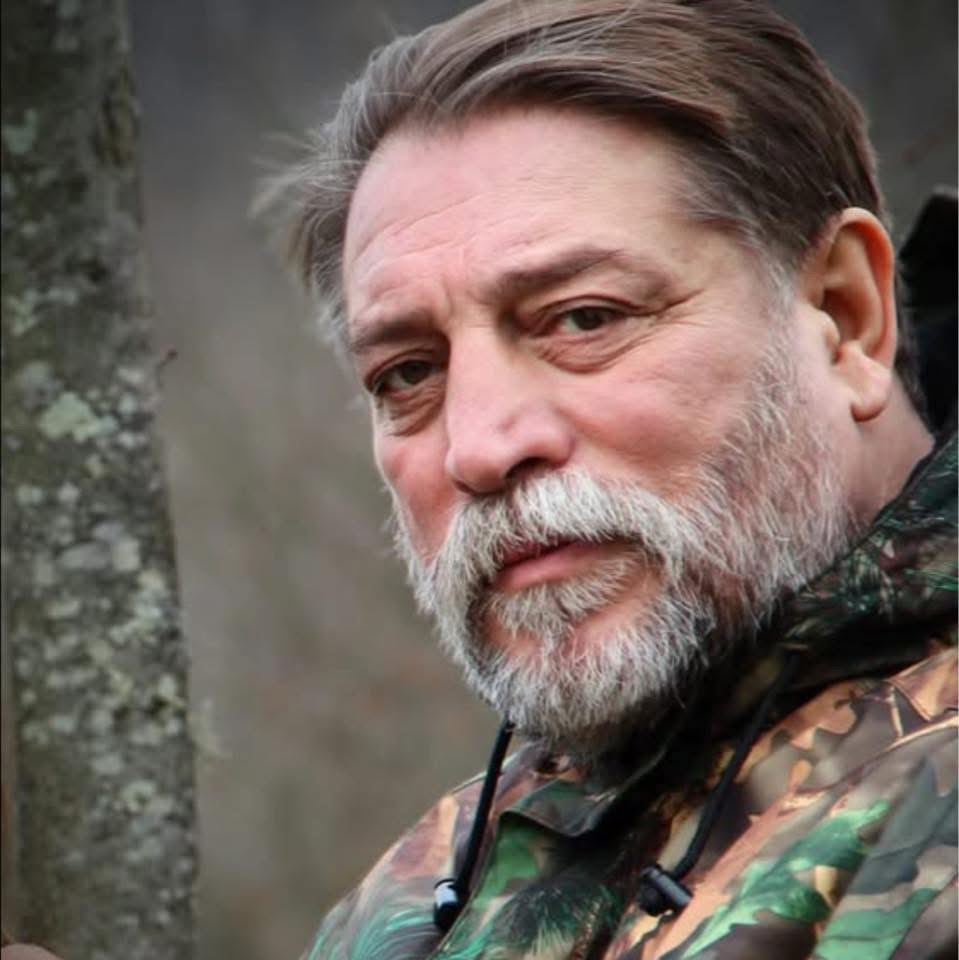

Proză
când cuvântul depășește versul

Dincolo de poezie, Andrei Constantin Burdușa explorează și spațiul prozei — un teritoriu în care aceeași sensibilitate lirică se desfășoară în timp și în destinele unor personaje construite cu aceeași grijă a cuvântului.
Miruța
în lucruMiruța s-a născut într-o zi de vineri, căutând dragostea — adică lumina. Căci dragostea este o formă de lumină. De iluminare. Și nu întâmplător era vinerea, ziua adormirii Sfintei Ana, mama preasfintei născătoare de Dumnezeu.
Miruța nu avea să fie o femeie frumoasă. Sau nu frumoasă în sensul comun. Nu și-a întemeiat niciodată devenirea pe această încercare de definire a ființei, atât de răspândită printre ceilalți. Conștientă de incapacitatea ei de a performa în estetica unei dive, conform standardelor sociale ale vremii, Miruța s-a orientat spre cuvânt. L-a abordat din două perspective: cuvântul cetit și cuvântul scris. Alegerea ei nu a fost pe placul părinților, care aveau o viziune mai plană, mai pragmatică asupra viitorului fetei. De aici s-au născut multe evenimente cu iz dramatic.
În mijlocul unui vis, Miruța descoperi pădurea. Era într-un luminiș de foioase, cu arbori foarte înalți, în răcoarea unei dimineți de vară timpurie. Erau desculți. El purta un costum de in crem, cu pantaloni largi și bluză lungă, simplă. Ea avea o rochie lungă, cu partea de sus ca o ie și partea de jos largă, învolburată. Pe cap — o coroniță din flori de câmp. În mâna dreaptă — un buchețel de crengi cu frunze colorate.
Priveau cerul și râdeau. Așteptau ceva. Apoi, a venit preotul — cu straie de culoarea cerului și chip de înger cunoscut. Le-a ținut o slujbă, legați de mâini cu un snop de grâu verde. A citit din Cartea Sfântă și au rostit împreună Tatăl Nostru — varianta scrisă de el. Le-a arătat o căsuță pe o culme. Le-a dat cartea și a dispărut. Au intrat în căsuță. Totul era simplu, rustic, drăguț. Ea a pus buchețelul în apă și a vrut să așeze cartea pe o poliță, dar cartea se transformase în icoană. Nu mai avea file. A agățat-o pe perete, de același cui cu coronița. S-au așezat la masă. În mijlocul mesei rotunde era o pâine mare, aburindă, și o cană de sticlă cu apă rece, cu broboane pe exterior și un șervet alb deasupra, brodat cu monogramele lor în ață roșie.
S-au închinat. El a rupt din pâine. I-a dat și ei o bucată. Mâncau cu poftă și râdeau în hohote. Ce i-a rămas în minte: fizionomiile lor inundate de o lumină absolută.
Se trezi brusc, de zgomotul telefonului.
Miruța se ridică cu greutate în capul oaselor. Parcă nici nu voia să se ridice. Și de ce să o facă, când lumea pe care și-o dorea era înlăuntrul visului, nu în afara lui?
Patruzeci și cinci de ani mai târziu, avea să moară Măicuța Celestina — cea care urma să îngrijească bărbatul ce avea să fie iubirea de-o viață a Miruței. Celestina îl născuse deja pe acest bărbat. Fusese și ea născută într-o zi de vineri. Fusese numită Ana.
Era vineri. O zi frumoasă de primăvară îi deschise pleoapele Anei, femeia micuță ghemuită pe patul alb de spital. Îi era frig. Își căută cu grijă pătura subțire, uzată, și o trase peste trupul firav și contorsionat. Simțea o durere ușoară în abdomen, dar se ferea să facă zgomot — nu voia să trezească celelalte femei. În mintea ei se amestecau gânduri și temeri, suprapuse peste durerile sarcinii care se apropia de capăt. Zorii curgeau pe ferestrele mari, goale, fără perdele. Se auzea ciripitul nestăvilit al vrăbiilor.
„Viața ar fi putut fi chiar frumoasă", își spuse Ana. Numai oamenii din jur îi dădeau fiori.
Avea adesea impresia că nu știe cum să se poarte cu ei, dar nici ei nu păreau să aibă grijă în a se purta cu ea.
Își puse mâna pe burtă. Cine era acolo, înăuntru? Toți îi spuneau „pruncul tău", „copilul tău", ca și cum ar fi fost o prelungire a ei. Dar ea simțea altceva — simțea că acolo era cineva diferit, nu străin, dar venit din altă parte.
În capul ei se învârteau însă temeri mai prozaice: unde va merge după ce naște? Gazda le spusese că trebuie să se mute, iar ea nu fusese în stare să caute altă locuință. În ultimele săptămâni abia se mai putea deplasa.
Bărbatul ei tânăr stătea atârnat de gardul care abia se ținea de peretele casei, într-un cartier de la marginea orașului, unde trăiau amestecați muncitori și țărani. Un melanj specific orașelor aflate în plină dezvoltare industrială, care nu își selectează locuitorii, ci îi acumulează înlăuntrul fabricilor imense care miros a șpan, motorină și gaz de eșapament.
Era o dimineață frumoasă de mai. Se pregătea să plece la fabrică. Se uita în lungul drumului după Gheorghe, care urma să apară dintr-o clipă într-alta. Privirea îi aluneca pe trupurile fine ale femeilor grăbite spre autobuze. Le privea cu ochii prădătorului, cu simțurile aprinse ale vânătorului.
Ana nu se gândea la el. Ciudat, bărbatul care îi schimbase viața, cel care o trimisese într-o direcție neașteptată, nu mai era prezent în gândurile ei decât circumstanțial. Acum, cel mai important era să treacă cu bine peste evenimentul care îi marca existența: Nașterea.
Doctorul venise de vreo jumătate de oră. Era în cabinetul său, își bea cafeaua cu asistenta șefă, cu care avea o relație veche și comodă. Totul intra într-o curgere normală, fără nimic senzațional, dar și fără surprize.
Astăzi avea două cezariene. Una la o femeie tânără, mică și cocoșată.
„Oare cine i-o fi tras-o și ăsteia?", se întrebă doctorul, amuzat.
Bărbatul șchiop îl văzu pe Gheorghe de departe — Gheorghe era cu un cap mai înalt decât toți ceilalți. Mergea legănat și crăcănat, ca un om de la țară. De fapt, asta și era. Plecase la oraș să-și facă un rost. Uneori, viața are așa de puține pretenții...
Orașul era un malaxor de destine. Nu avea nimic magic. Nimic metafizic. Semăna cu un furnicar.
Bărbatul și femeia abia sosiseră la oraș, direct de pe băncile școlii. Tineri, plini de energie și cu speranțe simple, dar mari. Singura deosebire față de ceilalți: erau infirmi amândoi. El avea piciorul drept tăiat din coapsă — doar un ciot care slujea de minune pentru fixarea protezei. Femeia nu-și explica această iubire. Sau mai bine spus, nu încercase s-o explice. Ce era de explicat? Se îndrăgostise de băiatul frumos, puternic și brunet încă de când îl cunoscuse.
Era puternic și svelt, brunet pe o piele perlată albă, cu ochii negri, foarte frumoși. Piciorul lipsă nici nu se sesiza când stătea pe loc, așa că ei îi păru perfect. Și se îndrăgosti de el brusc și iremediabil.
Și uite-așa, pe cât de ușor, pe atât de simplu și banal, tinerele femei se pregăteau voluntar să devină pradă bărbaților care plecaseră și ei, nu demult, la vânătoare.
Pădurea părea aprinsă de culori. Aveau senzația că era vie. De oriunde se năștea câte o mișcare de ram, și oricând putea să țâșnească un zgomot care le făcea inimile să sară din piept.
Restul fu ca un vis. De emoție și de teamă, nu înțeleseseră mare lucru. La un moment dat, totul fu dureros de dulce. Cursese și ceva sânge. Nu se știe nici de la cine, nici de ce. Dar fiecare fu convins că lui i se întâmplase.
Drumul de întoarcere fu mai greu, mai puțin frumos, și oarecum vinovat. În seara aceea nimeni nu dorise să vorbească prea mult. În genere, totul fusese prea mult. Și copleșitor.
Paisprezece și patruzeci și unu
în lucruZiua lui Alexandru începuse senină și liniștită, deși visase că Mercedesul lui se dezasamblase ca în desenele animate, sub o greutate prea mare. Senzația nu era deloc plăcută, cu atât mai mult cu cât încă nu-și rezolvase problemele cu cealaltă mașină, Nissanul, pentru care căuta de luni de zile o soluție, în conflict deschis cu societatea de asigurări. Firma aceea, își spunea el, era o adunătură de excroci puși pe căpătuială pe banii credulilor, pentru că numai așa se puteau face bani serioși în țara asta: păcălindu-i pe cei mulți și nevolnici.
Deci: spuneam că dimineața aceea de luni, de la sfârșitul lui octombrie, nu era deloc una urâtă, deși afară nu era atât de cald pe cât se anunțase la știri. Adia un vânt rece care te făcea să simți că e toamnă târzie, în ciuda soarelui care strălucea puternic și cald, dar numai la adăpostul parbrizului.
Adele era un copil cuminte, ceva mai răsfățat decât și-ar fi dorit maică-sa, dar aflat în permanență sub protecția lui Alexandru, care vedea roșu înaintea ochilor ori de câte ori fiica lui dădea semne că ar avea vreo suferință. Adele era, pentru Alexandru, refugiul, ființa în care își depozitase toată dragostea rămasă după nenumăratele deziluzii ale vieții. S-ar putea spune, așadar, că fetița era norocoasă și că se bucura de o dragoste părintească dusă, cel puțin, până la exagerare. Alexandru nu numai că o apăra pe Adele, chiar și de ieșirile nervoase ale maică-sii, motiv pentru care părinții se certau adesea, dar se străduia să-i facă viața cât mai lină cu putință, iar Adele profita din plin de asta, cu abilitatea unui prunc încă nevinovat, dar nicidecum pur.
Era frumoasă, blond-castanie, cu ochii verzi și cu un chip angelic, fără niciun fel de greșeli de proiectare. Alexandru constatase totuși, nu de mult, că o mulțime de copii frumoși se născuseră în anii aceia, poate pentru că lumea trecea atunci prin vremuri mai bune. Acum, în plină criză, nou-născuții nu mai păreau nici atât de frumoși, nici atât de veseli, iar părinții lor nici atât.
Telefonul îi sunase pe când se întorcea de la grădinița la care o lăsase pe Adele, și primul lui gând fusese că-l caută vreunul dintre angajați; era luni dimineață și se așteptau ordinele de lucru. Pe ecran apăru însă un număr pe care telefonul nu-l putea identifica, deși Alexandru avea sentimentul că-l mai văzuse undeva.
La început nu recunoscu vocea, pentru că la celălalt capăt femeia era și ea la volan, în drum spre școală, și pusese telefonul pe difuzor, iar vocea se auzea tare distorsionată. Și trebuie spus că un asemenea apel, la o asemenea oră, era pentru el un lucru neobișnuit.
Spun că era neobișnuit pentru că Alexandru nu mai avea de mult o viață sentimentală. Toată dragostea lui se revărsase în copilul blond de care abia se despărțise și pe care îl iubea cu o disperare dusă până la capăt, atât de tare încât nu și-ar fi putut închipui că fiicei lui i s-ar putea întâmpla vreodată ceva; iar în ipoteza absurdă a unei asemenea întâmplări, era convins că nu i-ar fi rezistat.
Își amintea, acum, e drept, detașat, de moartea prietenului și colegului său de bancă și de faptul că mama băiatului nu-și mai revenise niciodată. Sunt oameni care nu trec niciodată peste astfel de pierderi și care știu asta de la bun început; și nu numai că știu, dar se lasă pradă unei afecțiuni atât de puternice, încât sentimentul acela și ființa căreia i-l poartă devin singurul lor reper și unica rațiune de a trăi.
Alexandru se îndrepta cu pași siguri, dar fără voia lui, spre bătrânețe, pe care n-o privea, evident, cu ochi buni și căreia căuta, cu o disperare calmă și perseverentă, tot felul de subterfugii pentru a i se sustrage. Interesant este însă că nu-și căuta refugiul în anii de după patruzeci, acolo unde se simțise cel mai bine și mai sigur și unde, după despărțirea de Ana, făcuse ravagii printre femeile din jur, ca un fel de răzbunare pentru durerea insuportabilă pe care o trăise câțiva ani la rând și de care abia după nașterea Adelei scăpase, în sensul că nu-l mai bântuia noapte de noapte și nu-și mai ducea mâna la piept.
Alexandru iubise întotdeauna cu toată ființa lui; mai mult decât atât, trăise întotdeauna cu toată ființa lui. Asta era atât de adevărat, încât se poate afirma că Alexandru nu putea să mintă. Era, la propriu, incapabil să mintă, iar dacă ar fi rostit totuși o minciună, curând acea minciună s-ar fi prefăcut în adevăr. Dacă ar fi lipsit de la o întâlnire și s-ar fi scuzat spunând că e bolnav, a doua zi, cu siguranță, s-ar fi îmbolnăvit. Dacă ar fi spus că a avut un accident de mașină, nu trecea o săptămână și accidentul îi ieșea în întâmpinare.
Era atât de convins de adevărul acestei axiome, încât se străduia din toată ființa să rostească numai fraze adevărate, sau măcar adevăruri parțiale, ca să nu intre niciodată în conflict cu propriul destin, pe care îl socotea, pe bună dreptate, unul aparte.
Dar vă vorbeam despre telefonul acela matinal, sosit la opt și douăzeci și unu de minute. Vocea era greu de recunoscut și pentru că nu prea vorbeau la telefon; își scriau mai degrabă pe Messenger, fiindcă relația lor nu mai era de mult una reală, ci una virtuală. Lumea virtuală are avantajul că, atunci când ceva nu-ți convine, închizi calculatorul și ai ieșit din criză, și că acolo te poți construi cum vrei, scoțând din curriculum vitae toate nerealizările. Oare cum ar arăta un curriculum vitae în care ai trece toate nerealizările din viață? Sigur n-ar fi un document menit să atragă pe cineva.
Așadar, Maria îl sunase pe Alexandru la opt și douăzeci și unu de minute, în drum spre școala la care era directoare, ca să-i amintească de o clipă petrecută cu nu mai puțin de șaptesprezece ani în urmă și pe care bărbatul, evident, o uitase. Cu șaptesprezece ani în urmă, la ora paisprezece și patruzeci și unu de minute, Alexandru o invitase pe Maria la o plimbare care avea s-o aducă în fața unei imense provocări și a unei porți deschise kafkian spre labirintul unei iubiri imposibile.
De ce nu reținuse Alexandru întâmplarea? Pentru că nu reținem pe termen lung decât ce sapă adânc în memoria noastră, așa cum ai săpa o groapă în pământ: cu cât e mai adâncă și mai bine consolidată, cu atât sunt mai mari șansele ca urma ei să dăinuie.
S-ar putea trage de aici concluzia că Alexandru n-a iubit-o deloc pe Maria, deși se cunoșteau, vorbeau și rămăseseră în legătură toți acești șaptesprezece ani; dar n-ar fi adevărat. Ce se poate afirma cu certitudine e că iubirea aceasta a avut un destin nefericit tocmai pentru că n-a sosit la timpul potrivit; e, până la urmă, o chestiune de timing, și am să încerc să mă explic.
Dacă ai lua întâmplarea așa cum a fost și ai așeza-o pe o pagină albă, da, Alexandru n-ar putea fi iertat pentru că a lăsat uitarea să cadă peste această intrare în poveste, căci despre o intrare în basm vorbim aici. Dar dacă o așezi în contextul în care Tudor, fiul lui Alexandru, urma să împlinească un an două zile mai târziu, atunci întâmplarea devine o dramă, și toată frumusețea porții deschise se crapă ca un vitraliu trântit de furtună și se fărâmițează în cioburi inutile pe podeaua proaspăt spălată de doamna Tina, femeia care îi stătuse alături lui Alexandru aproape zece ani și care se apropiase de el ca de fiul pe care nu-l avusese niciodată.
Această împletire a întâmplărilor fiecăruia cu alte miliarde de întâmplări face ca viața tuturor să fie aproape imposibil de stăpânit cu mâna fermă care s-ar cuveni, iar Alexandru nu fusese niciodată un om care să poată fi socotit stăpân pe viața lui, ca, de altfel, marea majoritate a cititorilor acestor rânduri.
· II ·
— Știi ce zi e azi? întrebase Maria, iar vocea ei, trecută prin două difuzoare și prin două mașini aflate în mers, sosea ca de pe celălalt mal al unei ape.
Alexandru se uitase la ceasul de pe bord, apoi la colțul ecranului, ca un elev care caută pe tavan răspunsul pe care nu l-a învățat. Data nu-i spunea nimic. Sau, mai exact, îi spunea ceva ce nu avea nicio legătură cu Maria și care îl lovi în piept mai tare decât s-ar fi așteptat: peste două zile Tudor împlinea optsprezece ani, iar el, tatăl lui, nu se gândise la asta nici măcar o dată în toată dimineața aceea senină.
Și aici trebuie să vă spun că Alexandru a făcut ceva ce nu mai făcuse de foarte mulți ani. A mințit.
— Știu, a spus.
N-a fost o minciună mare. A fost una dintre acelea mici, de politețe, pe care oamenii obișnuiți le rostesc de zeci de ori pe zi fără să le bage de seamă, ca pe niște monede mărunte lăsate pe tejghea. Numai că Alexandru nu era un om obișnuit în privința asta și știa, chiar în clipa în care cuvântul îi ieșea din gură, că moneda aceasta avea să-i fie cerută înapoi, cu dobândă.
La celălalt capăt se făcu o tăcere scurtă, apoi Maria râse, un râs fără supărare, aproape tandru.
— Nu știi. Dar o să-ți amintești. La două și patruzeci și unu am ședință cu părinții. O să mă gândesc la tine.
Și închise.
Restul dimineții a fost o dimineață de luni ca oricare alta. Alexandru și-a împărțit oamenii pe lucrări, a băut o cafea care s-a răcit înainte să ajungă la jumătatea ei și a vorbit cu un funcționar de la asigurări care i-a cerut, pentru a treia oară, un document pe care îl trimisese deja de două ori. Dar printre toate acestea, fără să ceară voie, începură să i se așeze în minte lucruri. Nu amintiri, n-ar fi îndrăznit să le spună așa, ci frânturi: un miros de gutui coapte uitate pe un pervaz, o bancă vopsită de prea multe ori, de pe care vopseaua se cojea și lăsa să se vadă dedesubt o culoare mai veche, o mână de femeie care își strângea gulerul la gât, deși încă nu era frig.
Nu știa de unde vin. Și aici e partea pe care vă rog s-o rețineți, pentru că de ea atârnă tot ce urmează: Alexandru nu putea deosebi dacă își amintea, sau dacă minciuna lui de la opt și douăzeci și unu își făcea de lucru, întorcându-se în trecut și construindu-i acolo, cărămidă cu cărămidă, adevărul pe care ea însăși îl rostise prea devreme. Căci dacă o minciună despre viitor se împlinește în viitor, unde altundeva să se împlinească o minciună despre trecut decât în trecut?
La două și patruzeci era în sala de așteptare a societății de asigurări, cu dosarul Nissanului pe genunchi, printre alți oameni care țineau și ei pe genunchi dosare și care aveau toți aceeași față de oameni păcăliți. Un ecran deasupra ghișeelor chema numerele cu o voce de femeie, distorsionată, și Alexandru ridică privirea spre ceasul de pe perete exact când minutarul trecu pe patruzeci și unu.
Nu a fost ca o amintire. A fost ca o ușă care se deschide într-o casă în care ai locuit cândva și pe care o credeai dărâmată. O stradă de-a lungul apei, frunze de castan strivite pe trotuar, o femeie de treizeci și ceva de ani care mergea lângă el fără să-l atingă, cu atâta grijă să nu-l atingă încât grija aceea era mai apăsătoare decât orice atingere. El îi vorbise despre copil, despre faptul că peste două zile împlinea un an, despre tortul pe care Ana îl comandase deja. Și ea se oprise în mijlocul trotuarului și spusese, fără reproș:
— Atunci n-am venit la timp.
Iar el, și se auzi spunând-o acum, după șaptesprezece ani, într-o sală de așteptare care mirosea a hârtie și a nerăbdare, îi răspunsese:
— Ba ai venit. Numai că eu nu sunt aici.
— Domnul Alexandru? Vă simțiți bine?
Funcționara de la ghișeul patru îl strigase de două ori. Alexandru se ridică, se așeză în fața ei și, când ea îi ceru să descrie încă o dată cum se petrecuse accidentul, i-l descrise. Tot, cu adevărat tot, inclusiv partea care nu-l avantaja deloc și pe care, în cele două declarații de până atunci, o rotunjise cu grijă. Femeia se opri din scris și se uită la el peste ochelari.
— De obicei oamenii nu spun asta.
— Știu, zise Alexandru. Și de data asta era adevărat.
Nu pot să vă spun dacă așa fusese plimbarea de acum șaptesprezece ani. Vă pot spune doar că, de la ora două și patruzeci și unu din ziua aceea de luni, așa fusese.
La cinci o luă pe Adele de la grădiniță. Fetița îl cercetă din scaunul ei din spate cu atenția aceea a copiilor care știu dintotdeauna unde e punctul slab al adulților.
— De ce ești trist?
Alexandru nu-și mai putea îngădui a doua minciună în aceeași zi.
— Mi-am amintit ceva.
— Ceva urât?
— Ceva frumos care a venit prea devreme.
Adele se gândi cu toată seriozitatea de care era în stare.
— Ca zăpada aia din octombrie, când n-aveam încă sanie?
— Da, zise Alexandru. Exact ca aia.
Și Adele, cu abilitatea ei de prunc nevinovat, dar nicidecum pur, socoti că venise momentul:
— Atunci azi îmi iei înghețată.
I-a luat, deși era sfârșit de octombrie și vântul tăia, pentru că nu se simțea, în seara aceea, în poziția de a refuza cuiva ceva.
Acasă, doamna Tina tocmai spălase pe jos, și casa mirosea a lemn ud și a săpun. Alexandru luă un pahar ca să bea apă, iar paharul îi alunecă din mână, de parcă ar fi avut o voință a lui, și se făcu țăndări pe podeaua proaspăt spălată. Doamna Tina veni din bucătărie, se uită la cioburi, apoi la el, și nu spuse nimic. Aduse mătura.
— Lăsați, domnu' Alexandru, că strâng eu. Așa sunt cioburile: n-aleg pe ce podea cad.
Târziu, după ce Adele adormise, deschise Messenger. Punctul verde de lângă numele Mariei era aprins. Scrise „Mi-am amintit.” și șterse, pentru că nu era sigur că e adevărat. Scrise apoi, rar, ca și cum ar fi dictat cuiva:
„Era un miros de gutui și o bancă vopsită în verde peste albastru. Și eu ți-am spus că nu sunt acolo.”
Trimise. Cele trei puncte apărură, dispărură, apărură din nou. Apoi:
„Banca era vopsită în albastru peste verde.”
Și, după un minut lung:
„Restul e adevărat.”
Alexandru rămase cu telefonul în mână. Minciuna muncise toată ziua, dar nu terminase; sau poate că terminase demult, iar banca fusese dintotdeauna altfel în memoria fiecăruia dintre ei. Nici eu nu știu care dintre ei avea dreptate. Știu doar că două amintiri ale aceleiași după-amiezi nu sunt niciodată la fel și că poate tocmai asta e iubirea: o bancă pe care fiecare o vopsește în altă ordine.
Închise conversația cu Maria și o deschise pe cea cu Tudor. Ultimul mesaj era de acum patru luni, un „ok” fără majusculă și fără punct. Scrise:
„Joi împlinești optsprezece ani. Aș vrea să ne vedem. Doar noi doi.”
Nu primi răspuns în seara aceea. Dar mesajul acela, cel puțin, era adevărat de la primul până la ultimul cuvânt.
În noaptea aceea visă din nou Mercedesul desfăcându-se ca în desenele animate, și abia atunci înțelese că greutatea nu fusese niciodată în portbagaj.